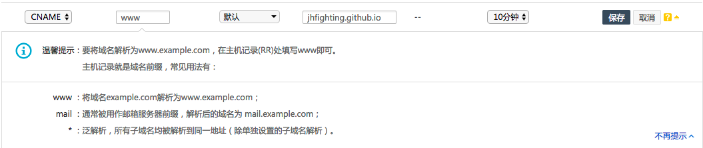
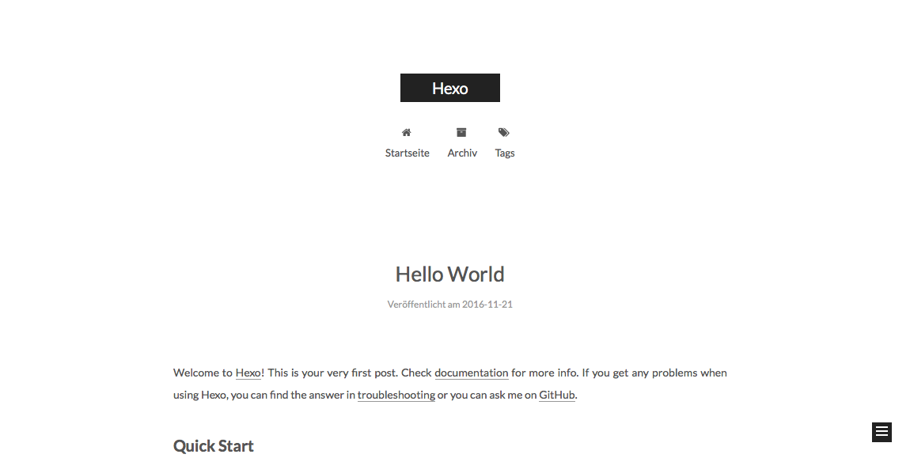

本文主要介绍通过hexo+github搭建个人博客的详细步骤。
一. 安装Hexo
本人在mac下安装hexo，首先需要安装npm，NPM是随同NodeJS一起安装的包管理工具,能解决NodeJS代码部署上的很多问题。如果电脑上没有npm，推荐使用Homebrew来安装,Homebrew是一款非常强大的可以应用在MAC中的Linux管理包：
1.执行安装brew
|
|
2.使用brew安装需要的命令，例如安装wget:
|
|
这里使用brew安装npm:
|
|
然后使用npm安装hexo框架:
|
|
二. 创建本地hexo
1.初始化hexo
新建一个文件夹作为hexo的本目录，例如blog，进入blog下执行命令初始化hexo：
|
|
生成如下几个文件：
_config.yml: 主配置文件themes: 主题source: 博客内容原始文章以及草稿public: 存放生成的所有静态页面node_modules: hexo插件scaffolds: 创建文档、页面初始模板
_config.yml配置文件中的都是基本的配置选项，比较简单，根据需求完成配置，其中language配置项的值要与主题中languages下的文件名称相对应。然后执行以下命令：
|
|
然后打开浏览器，输入localhost:4000查看hexo初始化的界面：
2.hexo常用命令
|
|
3.hexo基本使用
1.首页显示全文阅读
|
|
2.#号显示不正常
使用hexo写文章，需要严格makedown的书写规范，#号与标题之间必须加一个空格。
3.代码高亮
想要让代码高亮，需要使用以下格式:
根据使用语言的不同添加不同的语言标识，下表为常用语言对应的标识：
| 语言 | 对应代码 |
|---|---|
| Bash | bash, sh, zsh |
| C# | cs, csharp |
| C++ | cpp, c, cc, h, c++, h++, hpp |
| CSS | css |
| DOS | dos, bat, cmd |
| HTML, XML | xml, html, xhtml, rss, atom, xjb, xsd, xsl, plist |
| JSON | json |
| Java | java, jsp |
| JavaScript | javascript, js, jsx |
| Objective C | objectivec, mm, objc, obj-c |
| PHP | php, php3, php4, php5, php6 |
| Ruby | ruby, rb, gemspec, podspec, thor, irb |
| SQL | sql |
| Swift | swift |
| VB.Net | vbnet, vb |
4.文章中添加图片
文章插入图片需要用到Hexo的一个插件，首先在根目录执行以下命令：
|
|
然后将需要使用的图片添加到pubilc下文章对应的文件夹下。
三. 部署到githud
1.注册githud账号
2.创建与github账号同名的repository，例如，github的账号名为jhfighting，就创建jhfighting.github.io。
3.在blog的本目录下执行以下命令：
|
|
如下所示编辑_config.yml:
|
|
4.提交文件到github
在本地clonejhfighting.github.io，进入jhfighting.github.io文件夹中，将之前创建的hexo文件夹移至该文件夹中，然后执行以下命令：
|
|
这里直接提交需要配置ssh，网上有详细的步骤，这里通过安装Github Desktop，来提交到github上。然后在浏览器中通过访问jhfighting.github.io即可查看博客界面。
四. 绑定个人域名
1.注册域名
在网上注册一个域名账号，一些新的顶级域名（xyz,top等）很便宜，第一年只要1-2元。
2.域名解析
注册成功后，在域名的控制台中选择解析该域名。添加如下一条解析记录。

3.github绑定域名
首先进入github中的jhfighting.github.iopages中，点击setting
在Custom domain中填写需要绑定的域名，点击save保存。
hexo部署到github，会生成一个CNAME文件（没有后缀名），内容为绑定的域名。如果没有生成，可以在hexo中的source里添加CNAME文件，然后重新生成部署。此时，就可以通过注册的域名来访问个人博客啦。
五. 博客优化
hexo自带以及支持hexo第三方主题有很多，我们可以选择一款自己喜欢的主题来配置博客。这里选用了第三方主题NexT来配置优化。
1.更换next主题
- 首先从
github中下载并解压，然后将解压过的文件重命名为next（看心情）移至themes下。 - 在主配置文件中将
themes对应的配置项改为next。 hexo g、hexo s浏览界面。

2.修改next配置
next本身有许多不错的配置，并且还支持很多第三方的服务。具体配置可以查看官方文档，说明比较详细，根据自己的喜好完成配置。
六. 一些小坑
1.tags、categoryes等页面不显示
没有自动生成相应的index.html文件，可以手动添加这些page（以tags为例）：
|
|
编辑根目录下的source/tags/index.md，添加：
|
|
同理，categories、about或一些其他自定义的界面都可以使用这种方式来添加。
2. 右侧的文章目录显示不正确
首先需要使用正确的markdown格式，标题与#号之前加空格，同时标题末尾需要回车。另外文章目录会自动添加标号，想要去掉可以到主题的_config.yml文件，编辑：
|
|
将number改为false即可。